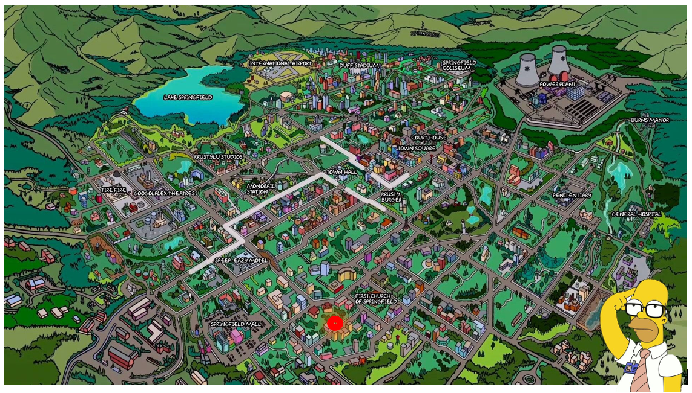
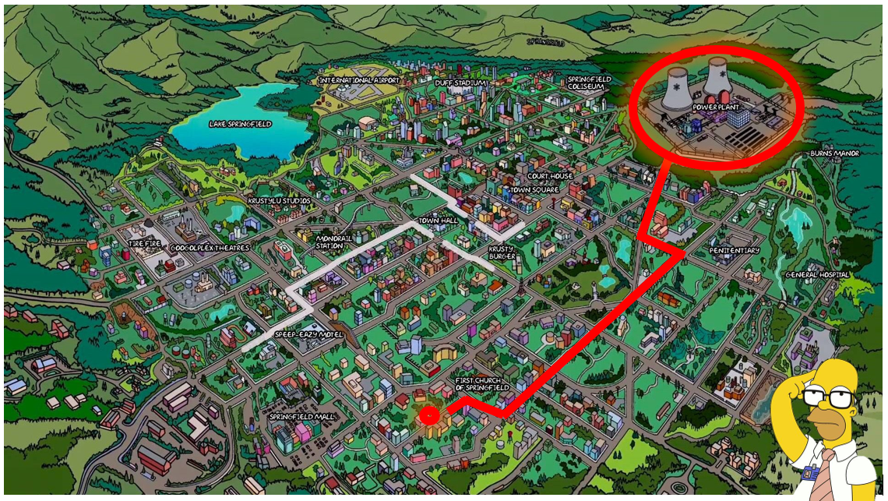
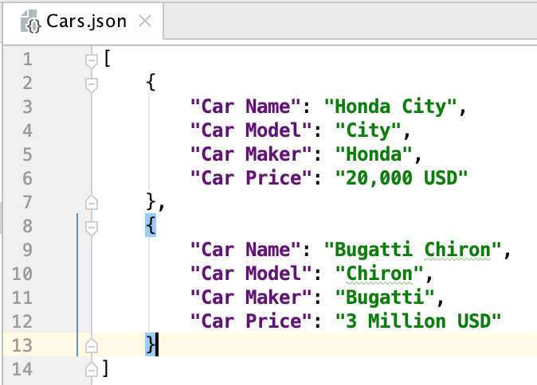

Data Wrangling: Importing Data
Data Analysis & Information Extraction
Unit overview
Content
- First Concepts
- Importing Data with R base
- Importing Data with tidyverse
- Parsing data
- Writing data
Data Wrangling
Objective: Make data ready for their future exploration and modelling
We need to convert raw data into processed data
Raw Data
- Data as it appears on the source origin.
- Any manipulation has been done to them.
Processed Data
- Each variable in a column.
- Each observation in a raw.
- Each observational unit is a cell.
- More complex data, interconnected tables.
Data Wrangling
- Importing the data
- Organizing the data
- Transforming the data

Requisites: tidyverse
The tidyverse ecosystem for data analysis

Importing data
We will learn how to import, download and read data in R. Mainly focused on tabular data.
As we have seen we will continue using the tidyverse ecosystem, focused on the main packages available for importing data into our environments.
We will follow this schema…
- Download data
- Read data with R-base
- Read data with tidyverse packages
First concepts
First concepts
Understanding the path and working directory
When working in our environments R will need a working directory, the place where it is located inside your computer.
For managing it two functions are essential getwd() and setwd()
First concepts
Creating a path
For navigating inside your computer you need to know how to build the paths… we can consider two types of paths when deciding how to tell our computer where we are…
Absolute Path
Relative Path
First concepts: Creating a path
Where is my job?
Homer works in the Nuclear Plant where it is?
First concepts: Creating a path
Where is my job?
Homer works in the Nuclear Plant where it is?
First concepts: Creating a path
How I get to my job?
Homer works in the Nuclear Plant how he can go?
First concepts: Creating a path
How I get to my job?
Homer works in the Nuclear Plant how he can go?
First concepts
Creating a path
We can tell the computer how to reach a place in our files two ways…
First concepts
Downloading data
We are going to learn how to create a folder called data from R and download data inside it.
- Check if the folder data already exists in the current directory, if not you can create it.
Use the following functions…
file.exists()dir.create()
First concepts
Downloading data
We are going to learn how to create a folder called data from R and download data inside it.
- Download the data about elections participation on Madrid Community (Spain) from the following url:
data_url <- "https://datos.comunidad.madrid/catalogo/dataset/929442fc-fef2-4f73-85a4-c4b02328531e/resource/4139576d-a11f-42be-a8de-48d37739f044/download/datos_electorales_elecciones_autonomicas_comunidad_de_madrid_2023.csv"
download.file(data_url, destfile="data/elections_data.csv")
list.files("./data")CSV files
Comma Separated files are designed to export and manage data in plain text, they are more interesting for storing tabular data. They use a delimiter like , for example to separate each value. The first row will be column names.
Learn more about CSV file an their properties here
Importing Data with R-base
read.table()
cod_muni Municipio Distrito Seccion Mesa Censo Certif_alta Certif_correc.
1 1 La Acebeda 1 1 U 64 0 0
2 2 Ajalvir 1 1 A 859 0 0
3 2 Ajalvir 1 1 B 863 0 0
4 2 Ajalvir 1 2 A 766 0 0
5 2 Ajalvir 1 2 B 871 0 0
Electores Votos_electores Votos_Interventores Votos_blancos Votos_nulos
1 64,0 54 0 0 1
2 859,0 554 1 11 11
3 863,0 543 1 6 3
4 766,0 561 1 2 9
5 871,0 624 2 14 5
Votos_total PP PUM.J PSOE ULEG PH PCTE MM.VQ CS PACMA FE.DE.LAS.JONS VOX
1 54 31 0 9 0 0 0 6 0 0 0 1
2 555 285 0 62 1 0 1 105 9 0 0 57
3 544 311 0 48 0 0 1 92 5 6 4 53
4 562 271 0 81 0 0 0 98 9 5 3 71
5 626 320 1 89 0 0 0 100 4 6 1 79
PODEMOS.IU.AV PFE
1 6 0
2 13 0
3 13 2
4 13 0
5 7 0read.table()
Some important parameters…
- header: TRUE if the file contains the column names in its first row, FALSE otherwise.
- sep: type of separator being use in the data: (
,,;,|, etc.) - na.strings: choose which kind of character will represent the
NAvalue. - nrows: maximum number of rows to read
- skip: number of rows to skip from being read.
- col.names: vector with the names to use as columns, if the file contains a first row with columns use
header = F
Reading JSON data
What is JSON?
JSON are the letters of Javascript Object Notation, is a lighter storing data format.
It is very frequently used for APIs, data is stored using objects pair key-value.

Reading JSON data
Sepal.Length Sepal.Width Petal.Length Petal.Width Species
1 5.1 3.5 1.4 0.2 setosa
2 4.9 3.0 1.4 0.2 setosa
3 4.7 3.2 1.3 0.2 setosa
4 4.6 3.1 1.5 0.2 setosa
5 5.0 3.6 1.4 0.2 setosa
6 5.4 3.9 1.7 0.4 setosaImporting Data with tidyverse
readr package
With tidyverse we have the readr package for reading data…
All readr function will do the data transformation and return a tibble
readr package
Some of the available functions…
read_csv()- files using,as delimiterread_csv2()- files using;as delimiterread_tsv()- files using tabulator as delimiter (|)read_delim()- files using another type of delimiter, we will need to provide it as an argument.
Reading data with readr
# A tibble: 5 × 27
cod_muni Municipio Distrito Seccion Mesa Censo Certif_alta Certif_correc.
<dbl> <chr> <dbl> <dbl> <chr> <dbl> <dbl> <dbl>
1 1 La Acebeda 1 1 U 64 0 0
2 2 Ajalvir 1 1 A 859 0 0
3 2 Ajalvir 1 1 B 863 0 0
4 2 Ajalvir 1 2 A 766 0 0
5 2 Ajalvir 1 2 B 871 0 0
# ℹ 19 more variables: Electores <dbl>, Votos_electores <dbl>,
# Votos_Interventores <dbl>, Votos_blancos <dbl>, Votos_nulos <dbl>,
# Votos_total <dbl>, PP <dbl>, `PUM+J` <dbl>, PSOE <dbl>, ULEG <dbl>,
# PH <dbl>, PCTE <dbl>, `MM-VQ` <dbl>, CS <dbl>, PACMA <dbl>,
# `FE DE LAS JONS` <dbl>, VOX <dbl>, `PODEMOS-IU-AV` <dbl>, PFE <dbl>Reading data with readr
We can provide a manually written csv:
Reading data with readr
Using skip argument:
Reading data with readr
If there are comments:
Reading data with readr
If there aren’t column names:
Properly formatting the column names
Following conventions column names should follow some rules, we can make sure these rules are being applied with janitor package:
Reading data with readr
Working with missing values if blank is not used…
Reading excel data with readxl
There is an special library for excel files:
# A tibble: 6 × 5
Sepal.Length Sepal.Width Petal.Length Petal.Width Species
<dbl> <dbl> <dbl> <dbl> <chr>
1 5.1 3.5 1.4 0.2 setosa
2 4.9 3 1.4 0.2 setosa
3 4.7 3.2 1.3 0.2 setosa
4 4.6 3.1 1.5 0.2 setosa
5 5 3.6 1.4 0.2 setosa
6 5.4 3.9 1.7 0.4 setosa Reading excel data with readxl
Working with ranges inside the excel file:
# A tibble: 6 × 3
Petal.Length Petal.Width Species
<dbl> <dbl> <chr>
1 1.4 0.2 setosa
2 1.4 0.2 setosa
3 1.3 0.2 setosa
4 1.5 0.2 setosa
5 1.4 0.2 setosa
6 1.7 0.4 setosa You can use cell_cols() or cell_rows() with range argument to specify only one part of the range.
Parsing vectors and files
Parsing vectors
Parsing Data
read_csv function realizes a parsing of text file. This means it converts a text file in an organized data structure.
For understanding better who it is does that we need to understand parsing functions. This functions will transform a vector of characters into an speciallized data vector.
Parsing vectors
Parsing Data
All parse functions are uniform: the first argument is the vector to parse and the na argument lend us decide with value treat as a missing value.
Parsing vectors
Parsing Data
If something goes wrong during the process a warning message will be displayed to inform us
Kind of parsers
Parsing Data
parse_logical()andparse_integer()for logical and integer values.parse_double()andparse_number()for numbers (second one more flexible)parse_factor()for categorical values (factors)parse_datetime(),parse_date()andparse_time()for times and dates.
Parsing numbers
Parsing Data
Numbers are quite complex as they have three main problems:
- Numbers can be described differently depending on the culture/language: 1,46 or 1.45
Parsing numbers
Parsing Data
Numbers are quite complex as they have three main problems:
- Sometimes we can find symbols in the numbers: 100%
Parsing numbers
Parsing Data
Numbers are quite complex as they have three main problems:
- Related with the first issue, representation can change on aggregation level: 1.000.000 or 1000000 or 1,000,000 or 1000K or 1M
Parsing Strings
Parsing Data
Computers represent text using hexadecimal code (look for ASCII)
The mapping between hexadecimal values and characters are called encoding. By default readr uses UTF-8, general by default.
Sometimes in cal fail with old systems files:
Parsing Strings
Parsing Data
We can avoid issues, analyzing the text prior to find the best encoding
Parsing Factors
Parsing Data
In this case we will need to provide parse_factor() a vector with the possible levels:
Parsing Dates and Times
Parsing Data
parse_datetime() for dates with hour. In the following order: year, month, day, hour, minute and second
parse_date() for dates. In the following order: year, month, day using - or / as separator
parse_time() for time. In the following order: hour, minute, seconds using : as separator. am or pm are optional.
Parsing Dates and Times
Parsing Data
You can define a format of the input to help the parsing…
Year
%Y 4 digits
%y 2 digits*
Month
%m 2 digits
%b “jan”
%B “january”
Day
%d 2 digits
%e space
*00-69 -> 2000-2069, 70-99 -> 1970-1999
Parsing Dates and Times
Parsing Data
You can define a format of the input to help the parsing…
Time
%H 0-23 hours (24)
%p 0-12 hours (12), use with %p
%p AM/PM
%M minutes
__
%s seconds (integer)
%OS real seconds
%Z time zone (e.g. America/Chicago)
%z UTC offset (e.g. +0800)
Read the documentation
Discover more about formatting dates here
Parsing a file
Parsing Data
How readr parse correctly the data?
readr will guess the correct the type of each column as follows:
Read the first 1000 rows
Guess the type using a determined heuristic
Parsing a file
Parsing Data
Sometimes it can fail…
It is possible that the first 1000 rows have special cases (e.g. 1000 integer values in a double variable)
Missing values can appear at the column.
It is suggested to try to inform the type of each column when it is possible.
# A tibble: 9 × 3
x y z
<chr> <chr> <chr>
1 1 a hi
2 <NA> b hello
3 3 Not applicable 9999
4 4 d ola
5 5 e hola
6 . f whatup
7 7 g wassup
8 8 h sup
9 9 i <NA> Parsing a file
Parsing Data
# A tibble: 9 × 3
x y z
<dbl> <chr> <chr>
1 1 a hi
2 NA b hello
3 3 Not applicable 9999
4 4 d ola
5 5 e hola
6 NA f whatup
7 7 g wassup
8 8 h sup
9 9 i <NA> Writing Data
Writing Data
Writing Data
Three main functions:
write_csv()to write csv fileswrite_tsv()to write tsv fileswrite_delim()to write with different delimiters
Using them:
Improved writing
Writing Data
Last writing functions are good, but don’t save the column typification making necessary specifying each time when reading. But we can use write_rds(), read_rds() in readr.
This functions will keep the data in binary RDS format keeping metadata for helping reading it properly.
Improved writing
Writing Data
Sepal.Length Sepal.Width Petal.Length Petal.Width Species
1 5.1 3.5 1.4 0.2 setosa
2 4.9 3.0 1.4 0.2 setosa
3 4.7 3.2 1.3 0.2 setosa
4 4.6 3.1 1.5 0.2 setosa
5 5.0 3.6 1.4 0.2 setosa
6 5.4 3.9 1.7 0.4 setosa
7 4.6 3.4 1.4 0.3 setosa
8 5.0 3.4 1.5 0.2 setosa
9 4.4 2.9 1.4 0.2 setosa
10 4.9 3.1 1.5 0.1 setosaOther data
Writing Data
There are plenty of libraries useful for reading/writing from different kind of sources in R:
- haven for SPSS, Stata, SAS
- readxl and writexl for reading and writing excel files
- DBI together with RMySQL or RSQLite for launching SQL queries to databases.


Importing Data